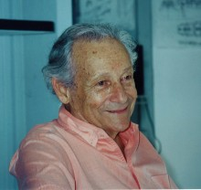

Please note: the AAS Obituaries are temporarily being hosted on this website while their full content is being ingested into the PubPub publishing platform newly adopted by the Bulletin of the American Astronomical Society. When the migration is complete, your existing links will take you to the final, migrated content. Contact peter.williams@aas.org with any questions.
Victor M. Blanco (1918-2011)
Victor Manuel Blanco, director of the Cerro Tololo Inter-American Observatory in La Serena, Chile, from 1967 to 1980, built CTIO into a leading observatory in the Southern Hemisphere and made it a model for successful national and international observatories. He died on 8 March 2011 in Vero Beach, Florida.
Born 10 March 1918 in Guayama, Puerto Rico, Victor received his primary, secondary, and initial university education on the island. He was interested in astronomy from a young age, but only after taking an elective course in it from a physics graduate student did he realize he could make a living at it. He saved enough funds from making furniture (a hobby he maintained throughout his life) to attend the University of Chicago for one quarter in 1939. The university offered him a scholarship and helped him find an off-campus job so he could continue his studies. In 1941, while he was working as a night assistant at McDonald Observatory, he was drafted into the US Army. His various posts with the army included being a meteorologist in Pacific war zones, briefing pilots on expected conditions.
Upon release from the army in 1946, Victor returned to the University of Chicago, which gave credit for his wartime meteorology courses so that he could obtain his bachelor’s degree and begin graduate studies. He subsequently left Chicago for the University of California, Berkeley, where Robert Trumpler was his adviser; his PhD thesis (1949) was entitled “Luminosity function and space distribution of A0 stars.” Victor returned to the University of Puerto Rico to teach physics and astronomy, but a lack of funds forced the university to eliminate his position after only a year.
In 1950 Victor joined the faculty at the Case Institute of Technology. With Jason Nassau, he used Case’s Burrell Schmidt telescope to examine the distribution of late-type stars in the Milky Way. Among their findings was that the central bulge region of the galaxy was rich in M-type giant stars and poor in carbon stars; however, in the galactic anticenter region they occurred in similar numbers. His later work at CTIO extended that result.
Victor left Case in 1965 to become head of the astronomy and astrophysics division of the US Naval Observatory. In 1967 he accepted the directorship of CTIO, where he spent the rest of his career.
Established in 1961 by the Association of Universities for Research in Astronomy with funding from NSF, CTIO was given the mission of providing astronomical facilities primarily for US and Latin American astronomers. At the time only 10% of the light-gathering power of the world’s telescopes was located in the Southern Hemisphere.
When Victor arrived in Chile in 1967, CTIO was just completing construction of its largest telescope, the 1.5 meter. That same year NSF and the Ford Foundation committed to funding construction of a 4-meter telescope now named for Victor. It was the Southern Hemisphere’s largest until the completion of the Magellan Telescopes and the Very Large Telescope.
At the time, however, Victor faced challenges on every front. He had to hire scientific staff, develop infrastructure and logistics for the 4-meter telescope, and establish relationships and agreements with the host country at all levels, including with the presidency, Ministry of Foreign Affairs, customs, universities, and local communities. His success in doing so, during a time of change and turmoil under three different governments was a singular accomplishment.
Despite the challenges, Victor built CTIO into a model national and international observatory. He recruited a young scientific staff (including me) and fostered their development into accomplished researchers, instrumentalists, and managers, who carried Victor’s example into international leadership roles.
Victor also successfully integrated CTIO into the national fabric of Chile, at both diplomatic and personal levels. He worked with Chilean staff to be a good employer and with local communities to be a good corporate citizen. I think one of his proudest accomplishments was that many Chileans came to regard CTIO as a Chilean observatory.
Victor was very much a hands-on scientist and engineer. He continued his research on late-type stars with the Curtis Schmidt telescope at CTIO and then with the 4-meter telescope. He showed that the ratio of carbon stars to M-type stars was higher in the Magellanic Clouds than in our galaxy; we now know that the increased ratio reflects the lower abundance of heavier elements in the Magellanic Clouds. He also studied the distributions of late-type stars in the galactic bulge and determined the apparent brightness at which their numbers peaked along the line of sight; his observations yielded information on the distance to the center of the galaxy. On the technical front, he was instrumental in the final optical alignment of the 4-meter telescope and its commissioning for use by visiting astronomers.
Victor’s many accomplishments made him a world leader in the development of ground-based astronomy in the second half of the 20th century. He possessed a rare combination of great scientific skills, ability to work extremely well within both South and North American cultures, and personal warmth. Those qualities, combined with his perseverance, determination, and toughness to successfully overcome the multiple challenges of building a forefront scientific installation in difficult circumstances, were unparalleled.
Originally published in Physics Today 64(12), 68 (2011).
Obituary written by: Patrick S. Osmer (Ohio State University, Columbus)
Additional links:
BAAS Citation: BAAS, 2013, 45, 009